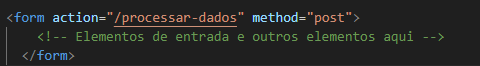
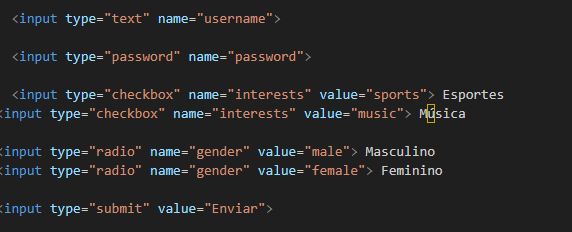

Trabalho Desenvolvido por Julio Barizon de Lemos
Os formulários em HTML são uma parte crucial da interação do usuário com as páginas da web. Eles permitem que os usuários insiram e enviem dados para os servidores web. Aqui está uma visão geral sobre a utilização e aplicação dos formulários, juntamente com as respostas às suas perguntas:
Utilização e Aplicação dos Formulários:
Os formulários em HTML são criados usando a tag "form". Dentro dessa tag, você pode incluir vários elementos de entrada, como campos de texto, caixas de seleção, botões de opção, botões de envio e muito mais. O conteúdo dentro do formulário é então submetido ao servidor quando o usuário clica no botão de envio.
Como funciona o container "FORM":
O container "form" é onde todos os elementos do formulário são incluídos. Ele possui dois atributos principais:
action: Este atributo especifica para onde os dados do formulário serão enviados após a submissão. Pode ser um URL ou um caminho relativo.
Method: Este atributo especifica o método HTTP a ser usado ao enviar os dados do formulário. Os dois métodos mais comuns são GET e POST. O método GET envia os dados como parte da URL, enquanto o método POST envia os dados no corpo da solicitação.

Quais os tipos de "input":
A tag "input" é usada para criar campos de entrada em um formulário. Existem vários tipos de campos de entrada disponíveis:
text: Um campo de texto simples.
password: Um campo de texto onde os caracteres digitados são mascarados.
radio: Botões de opção onde apenas um pode ser selecionado.
checkbox: Caixas de seleção onde várias opções podem ser selecionadas.
submit: Um botão usado para enviar o formulário.
select: Uma lista suspensa onde o usuário pode selecionar uma opção.
file: Um campo para upload de arquivos.
email, number, date: Campos de entrada com validação específica para email, número, data, etc.

Como funciona o método "POST":
Quando um formulário é submetido usando o método POST, os dados do formulário são enviados ao servidor em uma requisição HTTP separada, no corpo da solicitação. Isso significa que os dados não são visíveis na URL, o que é útil para dados sensíveis, como senhas. No lado do servidor, os dados podem ser acessados através das variáveis de ambiente ou da solicitação, dependendo da linguagem de programação utilizada para processar os dados do formulário.